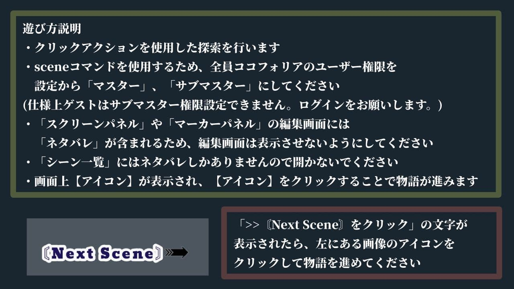
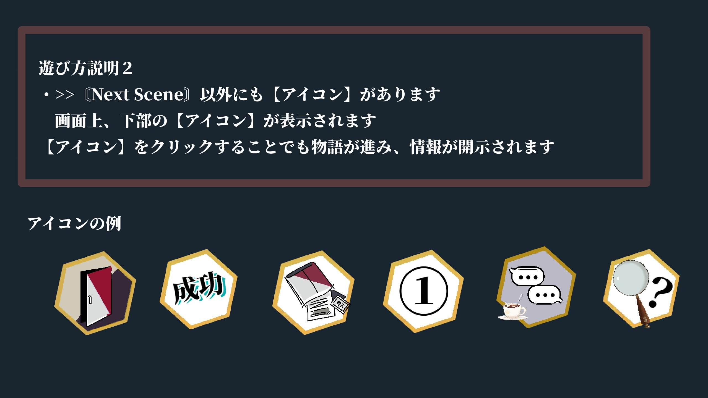
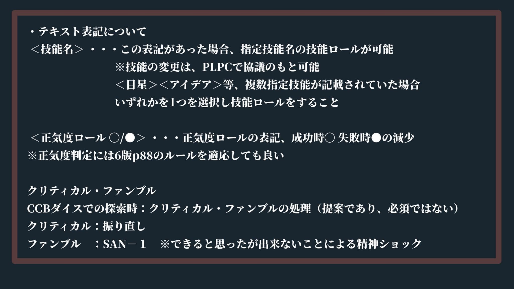
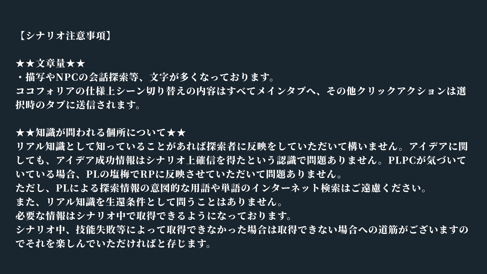
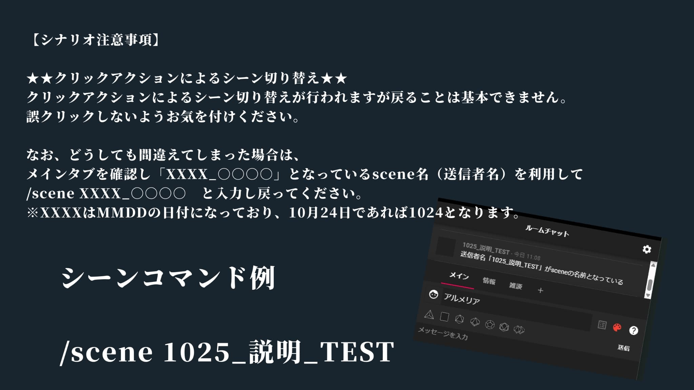
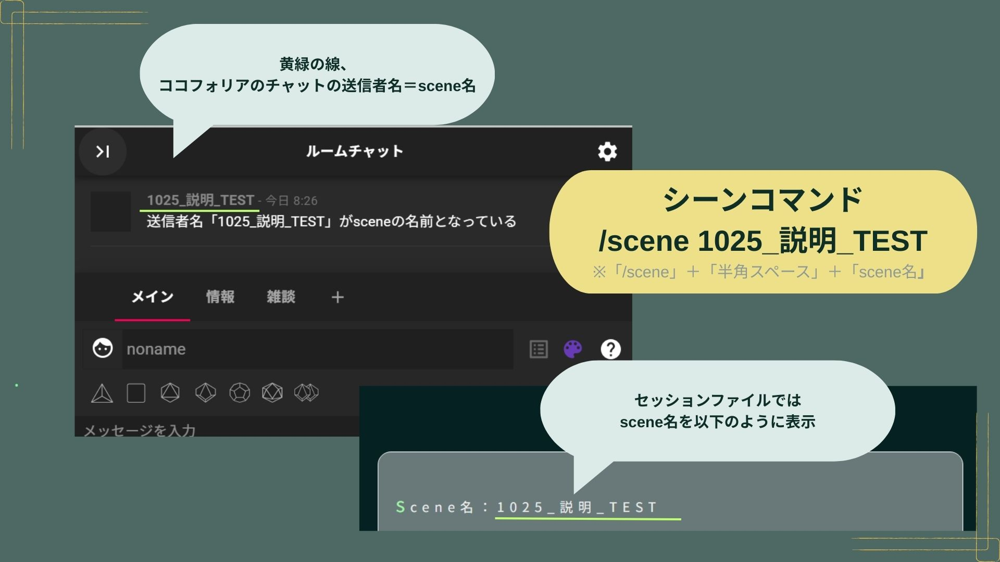
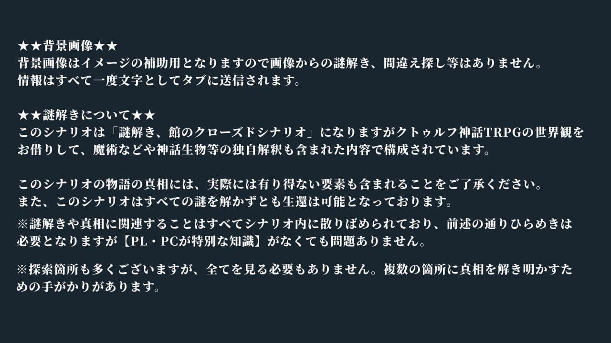

注意事項
導入までの注意事項
ココフォリアの部屋を開いてから、導入開始までに送信されたテキスト内容を表示していますすでに、注意事項を確認済の場合→導入へ
必ず注意事項には一度目を通してください
遊び方説明１
・クリックアクションを使用した探索を行います
・sceneコマンドを使用するため、
全員ココフォリアのユーザー権限を設定から「マスター」、「サブマスター」にしてください
※ゲストの場合「サブマスター」権限になりませんのでログインをお願いします
・「スクリーンパネル」や「マーカーパネル」の編集画面には「ネタバレ」が含まれるため、
編集画面は指示がない場合は表示させないようにしてください
・「>>〘Next Scene〙をクリック」の文字が表示されたら、下部にある>>〘Next Scene〙を クリックして物語を進めてください
・sceneコマンドを使用するため、
全員ココフォリアのユーザー権限を設定から「マスター」、「サブマスター」にしてください
※ゲストの場合「サブマスター」権限になりませんのでログインをお願いします
・「スクリーンパネル」や「マーカーパネル」の編集画面には「ネタバレ」が含まれるため、
編集画面は指示がない場合は表示させないようにしてください
・「>>〘Next Scene〙をクリック」の文字が表示されたら、下部にある>>〘Next Scene〙を クリックして物語を進めてください

遊び方説明２
・>>〘Next Scene〙以外にも【アイコン】があります
画面上【アイコン】が表示され、【アイコン】をクリックすることでも物語が進み、情報が開示されます
※ クリックする条件もカーソルを当てると表示されます。クリックする前に「必ず」内容を確認してください
画面上【アイコン】が表示され、【アイコン】をクリックすることでも物語が進み、情報が開示されます
※ クリックする条件もカーソルを当てると表示されます。クリックする前に「必ず」内容を確認してください

遊び方説明３
・テキスト表記について
＜技能名＞ ・・・この表記があった場合、指定技能名の技能ロールが可能です
※技能の変更は、PLPCで協議のもとおこなってください
＜目星＞＜アイデア＞等、複数指定された場合はいずれかの技能を選択してロールをしてください
※例の場合は、＜目星＞か＜アイデア＞のどちらかを技能ロールすることができます
＜正気度ロール 〇/●＞ ・・・正気度ロールの表記、成功時〇 失敗時●の減少
※ルルブ6版P88の最大値以上は減少しないルールを適応しても構いません。
クリティカル・ファンブル
CCBダイスでの探索時：クリティカル・ファンブルの処理（提案となりご自身のハウスルール使用でも構いません）
クリティカル：クリティカルするごとに、任意のロール結果、振り直し可能とする
ファンブル ：SAN－１ ※大失敗による精神ショック
＜技能名＞ ・・・この表記があった場合、指定技能名の技能ロールが可能です
※技能の変更は、PLPCで協議のもとおこなってください
＜目星＞＜アイデア＞等、複数指定された場合はいずれかの技能を選択してロールをしてください
※例の場合は、＜目星＞か＜アイデア＞のどちらかを技能ロールすることができます
＜正気度ロール 〇/●＞ ・・・正気度ロールの表記、成功時〇 失敗時●の減少
※ルルブ6版P88の最大値以上は減少しないルールを適応しても構いません。
クリティカル・ファンブル
CCBダイスでの探索時：クリティカル・ファンブルの処理（提案となりご自身のハウスルール使用でも構いません）
クリティカル：クリティカルするごとに、任意のロール結果、振り直し可能とする
ファンブル ：SAN－１ ※大失敗による精神ショック

セッション説明１
★★文章量★★
・描写やNPCの会話探索等により、文字数が多くなっております。
ココフォリアの仕様上、シーン切り替えはメインタブ、クリックアクションの内容は選択されているタブへ送信されます
★★知識が問われる個所について★★
リアル知識として知っていることがあれば探索者に反映をしていただいて構いません。
ただし、PLによる意図的なネットでの用語や単語検索、意味を調べることはご遠慮ください。
また、リアル知識を生還条件として問うことはありません。必要な情報はシナリオ中で取得できるようになっております。
シナリオ中、技能失敗等によって取得できなかった場合は取得できない場合への道筋がございますのでそれを楽しんでいただければと存じます
・描写やNPCの会話探索等により、文字数が多くなっております。
ココフォリアの仕様上、シーン切り替えはメインタブ、クリックアクションの内容は選択されているタブへ送信されます
★★知識が問われる個所について★★
リアル知識として知っていることがあれば探索者に反映をしていただいて構いません。
ただし、PLによる意図的なネットでの用語や単語検索、意味を調べることはご遠慮ください。
また、リアル知識を生還条件として問うことはありません。必要な情報はシナリオ中で取得できるようになっております。
シナリオ中、技能失敗等によって取得できなかった場合は取得できない場合への道筋がございますのでそれを楽しんでいただければと存じます

セッション説明２
★★クリックアクションによるシーン切り替え★★
クリックアクションによるシーン切り替えが行われます。
戻ることは基本できません。誤クリックしないようお気を付けください。
なお、どうしても間違えてしまった場合は、
メインタブを確認しscene名（送信者名）を利用して
/scene XXXX○○○○ と入力し戻ってください。
※XXXXはMMDDの日付になっており、10月24日であれば1024となります。
シーンコマンド例
/scene 1025_説明_TEST
※ シーンコマンドでの時をさかのぼるギミックはありません。あくまで誤クリックの救済処置となります。
クリックアクションによるシーン切り替えが行われます。
戻ることは基本できません。誤クリックしないようお気を付けください。
なお、どうしても間違えてしまった場合は、
メインタブを確認しscene名（送信者名）を利用して
/scene XXXX○○○○ と入力し戻ってください。
※XXXXはMMDDの日付になっており、10月24日であれば1024となります。
シーンコマンド例
/scene 1025_説明_TEST
※ シーンコマンドでの時をさかのぼるギミックはありません。あくまで誤クリックの救済処置となります。


セッション説明３
★★背景画像★★
背景画像はイメージの補助用となりますので画像からの謎解き、間違え探し等はありません。
★★謎解きについて★★
このシナリオは「謎解き、館のクローズドシナリオ」になりますがクトゥルフ神話TRPGの世界観をお借りして、魔術などや神話生物等の独自解釈も含まれた内容で構成されています。
このシナリオの物語の真相には、そのような世界観要素も含まれることをご了承ください。また、このシナリオはすべての謎を解かずとも生還は可能となっております。
※謎解きや真相に関連することはすべてシナリオ内に散りばめられており、
前述の通りひらめきは必要となりますが【PL・PCが特別な知識】がなくても問題ありません。
※探索個所も多くありますが、すべてを見る必要もありません。複数の個所に手がかりがあります。
背景画像はイメージの補助用となりますので画像からの謎解き、間違え探し等はありません。
★★謎解きについて★★
このシナリオは「謎解き、館のクローズドシナリオ」になりますがクトゥルフ神話TRPGの世界観をお借りして、魔術などや神話生物等の独自解釈も含まれた内容で構成されています。
このシナリオの物語の真相には、そのような世界観要素も含まれることをご了承ください。また、このシナリオはすべての謎を解かずとも生還は可能となっております。
※謎解きや真相に関連することはすべてシナリオ内に散りばめられており、
前述の通りひらめきは必要となりますが【PL・PCが特別な知識】がなくても問題ありません。
※探索個所も多くありますが、すべてを見る必要もありません。複数の個所に手がかりがあります。

セッション説明４
シナリオ内での登場するものは、すべて架空の人物及び団体、事件となります。
実際のものとは 一切関係ありません。また、特定のものへの批判中傷ではありません。
実際のものとは 一切関係ありません。また、特定のものへの批判中傷ではありません。